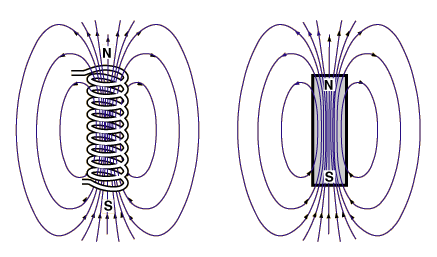

where ds is an element of length around an arbitrary closed loop "C", called an Amperian loop and the summation is over all currents passing through the loop.
Currents passing "out of" the loop are defined as positive, currents passing into the loop are negative, whereas current which do not pass through the loop are not included in the summation.


Since the wire is infinite, we know from the
Biot-Savart Law that B is perpendicular to dl
and r and thus lines of B must form
concentric circles around the current. Also, B
can, at most, depend only on the distance from the
wire, r.
The Amperian loop is chosen so that B is constant on the loop and in the same direction as ds - that is a circle whose plane is perpendicular to the wire and centered on the wire. This allows us to take B "out of the integral".
With the Amperian loop above we have

Since the solenoid is infinite, we conclude that B
is directed along the axis of the solenoid.
Also, B can, at most, depend only on the
distance from the axis of the solenoid. For an
infinite solenoid B = 0 outside the solenoid.
The rectangular Amperian loop (at right) is chosen so that B is constant on the two sides parallel to the solenoid axis and perpendicular to the ds on the other two sides. This allows us to take B "out of the integral".
With the Amperian loop above we have

What does a clock do when it's hungry ? It goes back four seconds.
Dr. C. L. Davis
Physics Department
University of Louisville
email: c.l.davis@louisville.edu